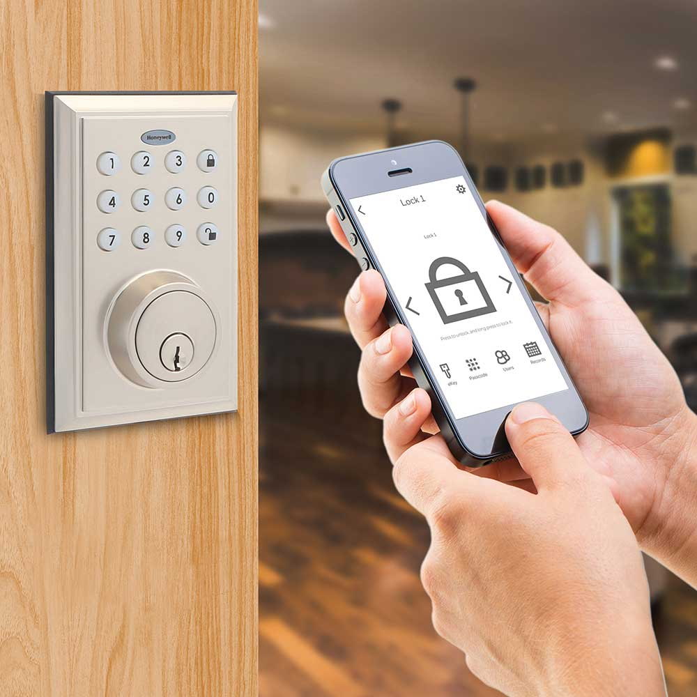

| Contents |
|---|
| 1. What is IoT? |
| 2. IoT Device Attacks & Vulnerabilities |
| 3. Solutions to Combat IoT Attacks |
IoT, known as the Internet-of-Things, allows for computing devices -- such as smartphones, tablets and computers -- to connect onto a network for the purpose of processing/transmitting data. IoT has made communicating and relaying information from our devices faster and more efficient [3]. This allows real-time data analysis to be stored onto a cloud. There are many industries that have, now, taken this approach; from manufacturing and automotive plants to healthcare and agriculture facilities. They have recognized the need for IoT for the purpose of monitoring the data remotely, without needing any cables or wires. There are a wide selection of cloud-computing softwares that follow this principle. This includes Amazon Web Services, Salesforce, Oracle and IBM Cloud. One has minimally worked with one of the IoT software tools, called Microsoft Azure. Using Microsoft Azure involved a list of connection strings and keys (for each event hub). Those strings and keys were to be set in Azure and the web application to gather data, as a visual aid for the consumer.
Although IoT has made a great contribution towards making devices more "smarter", there have been growing concerns about cyberattacks. A vulnerable IoT, without any security protocol in place, can open the door for hackers to gain unauthorized access to information and issue malicious attacks on devices. This poses as a severe problem for companies and businesses to run their operations effectively. The aim is to discuss how these IoT attacks occur and what can be done to resolve this issue by finding the appropriate practices, to protect oneself from future IoT attacks and vulnerabilities.
Over the years, the use of smarter technology -- to accomplish tasks from a day-to-day basis -- has grown exponentially. With more people using the networks, with their devices, the more that dangerous malicious activity would come into fusion. This has developed issues regarding hackers finding an unsecure access point, causing them to gain information easily without the victim ever realizing it. In 2018, ABC 7 News from San Francisco, stated that Consumer Reports had found how millions of smart TVs -- made by well known manufacturers -- were being hacked. Consumer Reports had figured out the tactics adversaries use to do their bidding [2]. The video, above, provides a deeper look into the matter [1].
This is not the only scenario where hackers can manuever their way into devices that are vulnerable of attacks. Nowadays, we have tons of electronics and household appliances that are becoming "smarter". From self driving cars to smart refrigerators, there is a growing concern as for how our data is being handled. Everyday users of these IoT devices must understand the attack surface areas and how to prevent those from becoming more severe. As stated from Trend Micro, the IoT attack surface areas that are impacted comes from the device, communication channel(s), and applications/software [5]. The adversary can take advantage of these elements whenever there's an outdated component on a user's device, or, when a software is not strongly secure enough, making it open to malware. In addition, the hacker can manipulate the system causing the user to experience denial-of-service (DoS) attacks that stops the devices from running properly, disturbs the computer servers and floods the host with unnecessary connections [7].
Looking from a business perspective, there are studies that the IoT attack surface is growing; this could lead to growing threats of networks connecting across mobile devices, especially in the workplace. Some companies use what is called a(n) network access control, or NAC. Fortinet, a cybersecurity company, describes in their report that NACs were once used to authenticate and authorize access endpoints using the scan-and-block method [6]. But now that the infrastructure of networks have changed, it has caused major issues where organizations do not feel safe about using NACs. 83% of organizations that used NAC discovered threats from their mobile devices; 67% were feeling less confident about the mobile security asset, due to a lack of endpoint visibility [6].
Overall, the concern of IoT surface attacks and the vulnerabilities of devices are to be taken into consideration. As the level of technology and networks are updated, so should the foundation of our security. With this in mind, there are questions that should be answered for a brighter future for IoT devices. Such as, who is responsible for ensuring that the product is safe and secure? How can one prevent IoT attacks from occurring in the future? Fortinet implies that manufacturers, users, and organizations -- as stakeholders -- share a responsibility to ensure that IoT devices are less vulnerable. Manufacturers should test their product to ensure that there are no signs of vulnerabilities. In the event that there's a presence of vulnerabilities, amongst the IoT devices, manufactures should make mention of the warning signs to their customers. The users should do their research on the effectiveness of security found from the devices and implement strategic methods to update and secure networks, passwords, and firmware/software. And, organizations should encrypt their networks to prevent malicious activity on the devices [4]. These attacks can take place at any moment; it is our duty to highlight and fix the problem, at hand, to ensure that using IoT devices are efficient and secure for everyone.
[1]"Investigation finds millions of smart TV's can be hacked", YouTube, https://www.youtube.com/watch?v=al7I4EOiqXA (accessed Jan. 25, 2025).
[2]"7 on your side, Consumer Reports investigation finds millions of Smart TV's can be hacked", ABC7 San Francisco, https://abc7news.com/consumer-reports-smart-television-televisions-can-be-hacked-tv-hacking-7-on-your-side-hack/3049003/ (accessed Jan. 25, 2025).
[3]"Internet of Things", UC Santa Cruz, https://its.ucsc.edu/news/internet-of-things.html (accessed Jan. 25, 2025).
[4]"Top IOT device vulnerabilities: How to secure IOT devices", Fortinet, https://www.fortinet.com/resources/cyberglossary/iot-device-vulnerabilities (accessed Jan. 25, 2025). (accessed Jan. 25, 2025).
[5]Z. Chang and S. Li, "The IOT attack surface: Threats and security solutions", Trend Micro (US), https://www.trendmicro.com/vinfo/us/security/news/internet-of-things/the-iot-attack-surface-threats-and-security-solutions (accessed Jan. 25, 2025).
[6]"Network Access Control (NAC) in the Era of IoT and Remote Work." Fortinet, Dec. 8, 2020
[7]J.F. Kurose and K.W. Ross, "1.6 Networks Under Attack," in Computer Networking, A Top-Down Approach, 7th ed, Hoboken, New Jersey: Pearson, 2017, pp.84-85